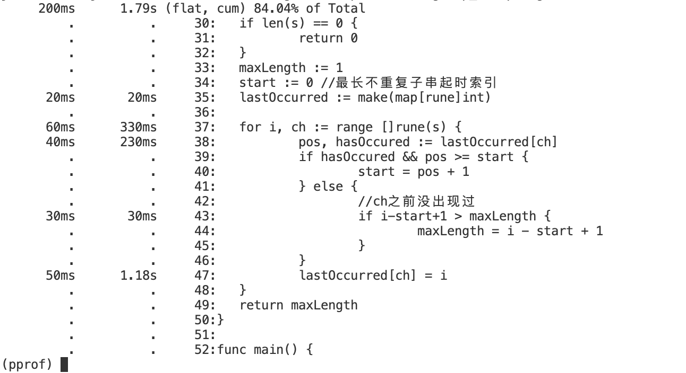
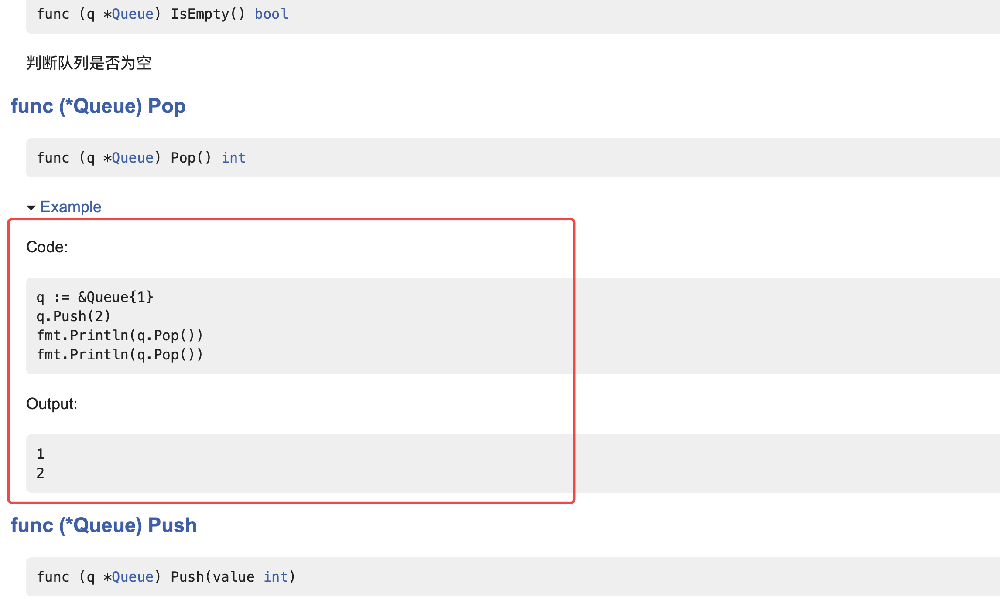
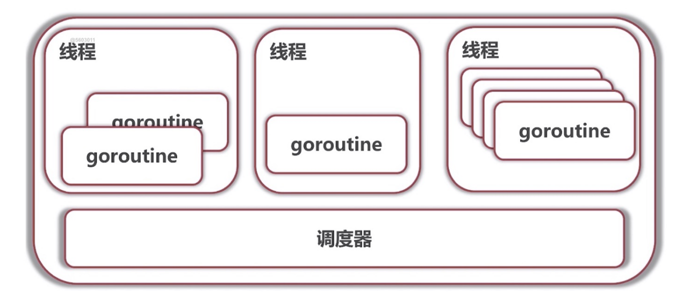

Golang基础知识小抄
Table of Contents
0x00 Go语言前世今生
Go语言诞生前主流编程语言的痛点有？Go语言的设计初衷是？
Go语言设计初衷
看看Go语言之前的语言，静态类型语言C++具有高执行效率但开发效率较低；动态类型语言Python和Javascript开发效率高但对系统底层的控制能力低、程序执行效率相对较低。于是Go语言设计者试图设计一种使开发的程序执行效率高且开发效率也不低的语言。
Go语言的优势
-
开发效率高且是静态语言->易协作、易维护
具有与Python相似的开发速度，同时更加高效，项目易维护
-
对并发编程有原生支持
可以充分利用多核
-
部署方便
可跨平台编译
-
生态完善
内置丰富的标准库和工具
阅读资料
Go语言系统学习材料
教材
-
源代码
0x01 Go语言开发环境
Go语言安装与环境配置
下载地址
-
官方地址：https://go.dev
-
Go语言中文网：Go下载 - Go语言中文网 - Golang中文社区
环境配置
查看go语言环境变量
go env
修改环境变量方法(可以通过 go help env命令查看详情)：
go env -w 变量名=变量值
如设置Go代理可执行如下命令：
go env -w GOPROXY=https://goproxy.cn,direct #其中https://goproxy.cn是国内镜像服务器地址
Go语言开发IDE及配置
IntelliJ Idea/GoLand
IntelliJ IDEA：JetBrains 功能强大、符合人体工程学的 Java IDE
在idea中安装Go语言插件后即可进行go项目开发，与GoLand具有一样的功能
插件
- file watcher
vscode
-
需要安装Go语言相关插件。
-
如果缺失某插件，IDE会提示安装，或可点击IDE右下角“Analysis Tools Missing”提示处选择安装缺失插件，部分插件如：
-
dlv
go语言的调试工具
-
go-outline
-
gopls
Go语言官方的语言服务器（Language Server），为开发工具提供自动完成、转到定义、查找引用等语言功能。
-
……
-
运行项目需要通过命令行进行
go run main.go # main.go属于main package，具有main函数-
无法像GoLand IDE这样自动生成Go项目
需要手动初始化go.mod文件,命令：
go mod init coolgiserz/learngo
-
阅读资料
IDE及其配置
环境变量
-
GOPATH
0x02 Go语言基础
基础语法
变量定义、内建变量类型、常量与枚举、条件语句、函数、指针
变量定义
与javascript相似的地方是通过var关键字定义变量，定义变量时可以指定类型，也可以让编译器自动推断。go语言指定变量类型的风格与C++不同，类型指定于变量名后。
var a int
var s string
go语言还支持通过:=（声明并赋值，不需要var关键字）进行更简洁地变量定义(变量只有第一次出现时能用:=进行初始化)
a, b := 1, 2
内建变量类型
-
bool, string
-
(u)int, (u)int8, (u)int16, (u)int32, (u)int64, uintptr
不指定长度的(u)int其长度取决于系统，32位则为(u)int32
-
byte, rune
byte表示ascii码的字符，是uint8类型的别名
rune即是golang中的"char",代表UTF-8字符，rune的长度是32位，等价于int32。处理国际化、多语言字符时使用rune
-
float32, float64, complex64, complex128
Go语言原生支持复数表达，complex64/128用于表示复数
强制类型转换
C/C++语言具有隐式类型转换，而Go语言中类型转换是强制的，编译器会严格检查类型。普通变量类型可以通过type(variable)进行强制类型转换，对指针的强制类型转换需要借助unsafe包里的函数。
常量和枚举
Golang的常量用关键字const定义，如果不指定常量类型，则常量可以表示任意类型；
枚举可用常量块定义：
const(
english = 0
math = 1
chinese = 2
)
还可以为枚举变量用itoa进行自增赋值
条件语句
if…else
if关键字后可以先接赋值语句再接判断条件
func branchIf1() {
filename := "data/test.txt"
if text, err := ioutil.ReadFile(filename); err == nil { // if的条件前可以接赋值语句
fmt.Printf("%s \n", text)
} else {
// fmt.Println("Error occurred!", err)
panic(err) //程序主动调用panic，立即返回函数
}
}
switch
golang的switch分支控制，case默认匹配到一个case执行完对应代码块即会退出switch，后不需要在case后接break，不像c++默认会往下匹配其它case
//case后不需要接break，默认匹配到一个case执行完即会退出switch，不像c++还会往下匹配其它case
func branchSwitch1(variable int) {
switch {
case variable > 50:
fmt.Println("variable>50")
case variable > 10:
fmt.Println("variable > 10")
default:
fmt.Println("variable <= 10")
}
}
也可以使用 fallthrough 会强制执行后面的 case 语句，fallthrough 不会判断下一条 case 的表达式结果是否为 true。
// 使用 fallthrough 会强制执行后面的 case 语句，fallthrough 不会判断下一条 case 的表达式结果是否为 true。
func branchSwitch2(variable int) {
switch {
case variable > 50:
fmt.Println("variable > 50")
fallthrough //匹配到variable > 50后还会执行下一个条件variable < 50对应的代码块
case variable < 50:
fmt.Println("fallthrough variable < 50")
default:
fmt.Println("variable <= 10")
}
}
循环语句
for循环
风格上，Golang的循环条件不需要/不允许加括号（C++中必须加括号）。for循环形式为：
for init; condition; post { }
其中初始条件(init)、递增表达式(post)可以省略.
//将十进制数转为二进制
func convert2bin(n int) string {
var result string
for ; n > 0; n /= 2 {
tmp := n % 2
result = strconv.Itoa(tmp) + result //strconv.Itoa(tmp)把int类型变量转换成string
}
return result
}
while循环
Go语言中没有while关键字，while循环也用for关键字完成，如死循环的写法：
for {
fmt.Println("Forever")
}
for-each range循环
遍历字符串、数组、切片中的元素时，可以用如下形式的语句
for INDEX, VALUE := range CONTAINER {}
函数
golang的函数包括五个部分：
-
func关键字
-
函数名
-
形式参数列表
参数名在前，参数类型在后
-
返回值类型
返回值类型写在最后
-
函数体
示例：
//可以在定义函数返回值类型的同时定义返回值的变量
func div2(a, b int) (q int, r int) {
q = a / b
r = a % b
return q, r
}
一般采用多返回值的函数，其中一个返回值会是error变量，用于告知调用者函数执行过程中是否发生错误。
//一般函数返回值会包含一个error类型的变量，用来告知调用者函数执行是否发生错误
func eval2(a, b int, op string) (int, error) {
switch op {
case "+":
return a + b, nil
case "-":
return a - b, nil
case "*":
return a * b, nil
case "/":
q, _ := div1(a, b) //如果不想用第二个返回值，通过_接收想要忽略的返回值
return q, nil
default:
return 0, fmt.Errorf("Error: Unsupported Operators")
}
}
函数本身也可以成为函数的参数:
//回调函数,函数本身也可以作为函数的参数
func apply(op func(a, b int) int, a, b int) int {
return op(a, b)
}y也可以名函数
也可以不指定函数名，写匿名函数不需要lambda关键字
//匿名函数
fmt.Println(apply(func(a, b int) int {
return a + b
}, 2, 10))
参数可以接受可变参数列表
//可变参数列表,numbers可以当作数组
func sum(numbers ...int) (result int) {
for _, x := range numbers {
result += x
}
return result
}
注
Go语言没有默认参数、可选参数、函数重载的概念
指针
Go语言的指针与C/C++语言有较大差别。
Go语言不能对指针进行运算，但可以改变指针所指向地址的值。
对于函数调用的参数传递过程，Java和Python大多数情况是引用传递，C/C++既可以值传递又可以按引用传递，Go语言只有值传递，其通过指针传递（对指针/地址进行值传递）实现类似C++中引用传递的效果。
内建数据结构、容器
数组、切片、哈希表
数组
数组声明
//声明数组
var arr1 [4]int//如果只声明不初始化，则默认认为每个元素取0
arr2 := [3]int{4, 3, 2} //通过:=声明数组的话需要初始化
arr3 := [...]int{4, 2, 4, 2, 1, 6} //编译器
var grid [4][5]int //二维数组：4行5列，4个长度为5的一维数组构成的数组
fmt.Println(arr1, arr2, arr3, grid)
数组遍历
//遍历数组,go风格，使用range关键字
for i, v := range arr3 {
fmt.Println(i, v)
}
//传统风格 C风格
for i := 0; i < len(arr3); i += 1 {
fmt.Println(i, arr3[i])
}
}
数组类型
数组是值类型，作为参数传递给函数时会发生拷贝
func printArray(arr [5]int) {
arr[0] = 999
fmt.Println("数组", arr)
}
func printArray1(arr *[5]int) {
arr[0] = 999
fmt.Println("数组", arr)
} //数组类型：值类型，作为参数传递给函数时会进行拷贝
func main(){
printArray(arr3)
printArray(arr1)
fmt.Println(arr3, arr1) //printArray中改变数组的值不影响原来的arr1、arr3的值
// printArray(arr2) //会报错，[3]int和[5]int是不同的类型
printArray1(&arr3)
printArray1(&arr1)
fmt.Println(arr3, arr1) //arr3、arr1的第一个元素发生了改变
}
/**输出
数组 [999 2 2 1 6]
数组 [999 0 0 0 0]
[4 2 2 1 6] [0 0 0 0 0]
数组 &[999 2 2 1 6]
数组 &[999 0 0 0 0]
[999 2 2 1 6] [999 0 0 0 0]
**/
切片（slice）
概念
slice是array的视图，可以理解为动态数组，其长度不固定，是引用类型而不是值类型，其内部是指向数组元素的指针。
可以通过len()获取切片长度，cap()获取切片容量（最长可达到多长）
操作
-
向切片添加元素（append）
添加元素时如果超越cap(slice)，系统会重新分配更大的底层数组；
由于值传递的关系，必须接受append的返回值
s = append(s, val)
-
创建切片
//1. 从数组中创建 arr := [5]int{4,2,51,2} s := arr[2:4] var s1 []int //2. 直接声明zero value for slice，切片未初始化前默认nil，长度为0 var s2 []int{2,3,4,5} //3.使用内建函数make创建指定长度或cap的切片 s3 := make([]int, 10, 32) -
复制切片(copy)
-
删除切片元素
删除切片元素没有内建函数完成，可以通过append子切片完成,如:
//删除切片元素,如删除第3个元素 fmt.Println("===删除切片元素===") s5 := []int{4, 2, 1, 0} printSlice(s5) s5 = append(s5[:2], s5[3:]...) printSlice(s5) //输出 //slice: [4 2 1 0], len: 4, cap: 4 // slice: [4 2 0], len: 3, cap: 4
集合（Map）
Map是一种无序的键值对集合，通过key来索引数据
可通过make函数或者map关键字来定义Map
//定义Map
m := map[string]string{
"GCN": "图卷积网络",
"GAT": "图注意力网络",
"AGCN": "自适应图卷积网络",
"HGCN": "双曲图卷积网络",
}
m2 := make(map[string]int) //empty map
var m3 map[string]int //nil
什么类型的变量可以作为Key？
除了slice,map,function的内建类型都可以作为key
集合操作
-
添加元素
-
删除元素
-
遍历集合
面向对象
结构体和方法、包和封装、类型扩展
在“面向对象”上，Go语言摒弃了继承和多态的概念，仅保留了“封装”，其更提倡采用组合和面向接口编程来实现代码复用和多态特性。
结构体和方法
如何定义结构体？
如何定义结构体的方法？
结构体方法应该选择值接受者还是指针接收者？
看是否需要改变对象的内容，以及结构体本身内容的大小，如果需要改变对象内容则选择指针接收者；如果对象本身很大也选择指针接收者，否则需要拷贝整个对象会带来很大开销。
包和封装
封装
如何控制方法属性的可见性？
-
首字母大写：public
-
首字母小写：private
包
-
每个目录一个包
-
main包包含可执行入口
-
为结构定义的方法必须放在同一个包内（可以在不同的文件中）
-
包名和目录名可以不同
常用系统包
-
fmt
用于各种输出，（格式化地）输出各种类型的变量（数字、字符串、错误）到终端或者文件等。
-
io
-
bufio
在io包的基础上增加缓存功能，提高大块数据读写效率
-
strconv
-
os
-
strings
包含字符串操作，如截取、分割
-
bytes
-
net/http
-
encoding/json
-
reflect
扩展已有类型
使用组合、别名、内嵌来扩展已有类型
阅读材料
- Golang中函数传参存在引用传递吗？
- Composition Instead of Inheritance - OOP in Go
- Go 语言中的系统包(http://www.imooc.com/wiki/golesson/goospackage.html)
0x03 Go语言依赖管理
依赖管理
所谓依赖指的是某个程序的编译需要在第三方代码的基础上进行。依赖管理有三个阶段GOPATH、GOVENDOR、go mod。
GOPATH和GOVENDOR
Go语言早期的依赖管理方案。
GOPATH是一个环境变量/目录，linux环境下默认是~/go，其将库存放在该路径中供go项目引用/导入。比方说，当你在项目文件中import某个包时，编译器会去$GOROOT、$GOPATH目录搜索是否有对应的包，有则成功导入，无则报错。
(base) ➜ testproject git:(master) ✗ go run zaptest.go
zaptest.go:3:8: cannot find package "go.uber.orag/zap" in any of:
/usr/local/Cellar/go/1.15.3/libexec/src/go.uber.orag/zap (from $GOROOT)
/Users/zhuge/Projects/Go-Project/tmp/gopathtest/src/go.uber.orag/zap (from $GOPATH)
如果每个项目对库版本有差异，可以用GOVENDOR，通过vendor目录（在项目目录中）存放第三方库。项目搜寻依赖库时会去vendor目录找。
go mod
要使用module功能需要开启GO111MODULE，此时使用go get命令会优先通过镜像下载，go也不会去访问GOPATH
go.mod和go.sum包含什么信息？有何作用？
只要目录中包含go.mod文件，该目录既可以作为module，通过go mod init MODULE_NAME可以初始化go.mod。
go.sum包含模块特定版本内容加密的哈希。用于确保未来下载这些模块时与第一次下载的相同，避免依赖版本冲突。go.sum不需要手动维护
如何增加依赖？
通过go get命令获取对应的依赖
如何使用特定版本的库？
go get -v “xxxxxx@VERSION”
如何整理库环境
可以通过go mod tidy整理库环境，移除不使用的库或者增加缺失的库
如何迁移库（TODO）
go mod init
go build ./…
go mod的优势
由go命令统一管理依赖库，用户不必关心目录结构（如GOPATH、vendor等）
目录整理
风格上，每个目录只有一个main包。
go build ./... #编译当前目录及子目录下的go文件，不生成可执行文件，全部编译通过则无输出
go install ./... # 编译并生成可执行文件，默认可执行文件存放在$GOPATH/bin
0x04 面向接口编程
（接口、duck typing、接口值类型、接口组合、系统接口）
duck typing
"If it walks like a duck and it quacks like a duck, then it must be a duck"
-
描述事物的外部行为而非内部结构
调用实例方法时，只要方法存在，参数正确就可以调用
不同语言中的duck typing
Python中的duck typing
运行时进行类型检查。
C++中的duck typing
通过模版实现。编译时进行类型检查
java中的duck typing？
java没有duck typing。
通过强制要求实现某个接口实现多态
【apache polygene】
Go语言中的duck typing
优势？解决了哪些痛点？
-
在同时需要多个接口也方便使用（解决了Java的痛点）
-
同时具备python、C++的duck typing的灵活性
-
具备静态类型检查
Golang接口定义与实现
接口引入的目的是为了解耦，即使得业务逻辑与具体实现分离，接口就是用于接触耦合的“插座”。有了接口，上层模块就可以不再依赖于底层的具体模块，只需要依赖一个事先约定的接口。
Go语言的接口是一种内置类型，其声明一组方法（包括方法名、参数、返回值），但不能声明变量（java语言的接口还可以声明变量）
Go语言中接口的实现是隐式的，不需要声明实现了哪个接口，只要实现了接口中的所有方法即认为实现了接口。（java语言实现接口需要显式声明接口并实现接口的所有方法）
接口的值类型
类型断言（type assertion）
(为什么需要类型断言？)
接口的组合
（TODO）
常用系统接口
-
io.Reader/io.Writer
-
fmt.Stringer
阅读材料
0x05 函数式编程
(TODO)
理念：参数、变量、返回值都可以是函数
结果：存在高阶函数，对于一个函数，其可以接受函数作为参数，也可以将函数作为返回值
函数性编程
闭包
（TODO）
小结
- golang没有lambda表达式，但是有匿名函数
0x06 工程化
资源管理、错误处理、测试与性能调优
资源管理
资源包括文件、数据库、网络连接。通常我们在使用了资源之后还需要关闭/释放资源，但实际上程序有可能在释放资源之前就由于一些错误、异常而中断。如下面这段代码,如果os.Create处执行失败，则函数会在没有关闭资源的情况下返回。
func CopyFile(dstName, srcName string) (written int64, err error) {
src, err := os.Open(srcName)
if err != nil {
return
}
dst, err := os.Create(dstName)
if err != nil {
return
}
written, err = io.Copy(dst, src)
dst.Close()
src.Close()
return
}
那么如何确保已经开启的资源能够被释放掉呢？go语言采用延迟（defer）调用进行资源管理，其作用、行为在于：
-
确保调用在函数结束时发生
-
defer队列先进后出
何时使用defer？
-
Open/Close
-
Lock/Unlock
-
PrintHeader/PrinterFooter
使用defer调用对上面所举的例子的代码进行可得：
func CopyFile(dstName, srcName string) (written int64, err error) {
src, err := os.Open(srcName)
if err != nil {
return
}
defer src.Close()
dst, err := os.Create(dstName)
if err != nil {
return
}
defer dst.Close()
return io.Copy(dst, src)
}
错误处理
错误处理的关键是获取错误的类型，对特定的错误类型进行特定的反应。
如何根据特定错误类型进行错误处理？可以应用前面说过的类型断言（Type Assertion）。
func writeFile(filename string) {
// file, err := os.Create(filename)
file, err := os.OpenFile(filename, os.O_EXCL|os.O_CREATE, 0666)
if err != nil {
//类型断言,判断err的错误类型,如果错误类型不是*os.PathError则panic，否则输出错误详细信息
if pathError, ok := err.(*os.PathError); !ok {
panic(err)
} else {
fmt.Printf("%s, %s, %s \n", pathError.Op, pathError.Path, pathError.Err)
}
return
}
defer file.Close()
fibWriter := bufio.NewWriter(file) //使用缓冲区，先让程序将内容写到内存中，到一定阈值再统一写入硬盘，提高文件写入效率
defer fibWriter.Flush() //将缓冲区的内容强制写入硬盘
f := fib()
for i := 0; i < 30; i += 1 {
fmt.Fprintln(fibWriter, f())
}
}
统一错误处理
有时需要将业务逻辑与错误处理的部分进行分离。
如果需要记录日志，可以使用标准库log，也有一些支持更多特性的第三方日志库，如gopm，可以按如下命令获取
go get -u github.com/gpmgo/gopm
panic和recover
panic是golang的一个内置函数，其作用类似java中的throw，当错误条件严苛，程序无法继续运行时使用panic()产生一个运行时错误并终止程序（抛出问题但不解决问题）。panic执行时会发生：
-
停止当前函数执行
-
逐层返回执行每一层的defer调用
-
如果没有遇见recover，程序退出
-
……
recover：
-
只在defer调用函数体内使用
-
获取panic的值。
什么时候用error？什么时候用panic？
尽可能用error。意料之中的错误用error，如文件打不开；意料之外的错误用panic
阅读材料
- Defer, Panic, and Recover - The Go Programming Language
- 一种用闭包处理错误的模式
- advanced-go-programming-book# Web 开发简介
0x07 测试与性能调优
Debugging sucks, Testing Rocks
调试与测试
vscode中调试go项目
vscode中调试go项目，可以配置launch.json，其中program表示编译的路径，需要注意的是，一个目录下只能有一个main函数。
{
// Use IntelliSense to learn about possible attributes.
// Hover to view descriptions of existing attributes.
// For more information, visit: https://go.microsoft.com/fwlink/?linkid=830387
"version": "0.2.0",
"configurations": [
{
"name": "Launch Package",
"type": "go",
"request": "launch",
"mode": "auto",
"program": "${fileDirname}"
}
]
}
测试
传统测试vs表格驱动测试
传统测试的缺点是：
-
测试数据与测试逻辑混在一起
-
出错信息不明确
-
一个用例出错则会退出
表格驱动测试的优势：
-
出错信息明确
-
用例可以部分失败
-
……
go测试包
命令行中运行测试
go test . #运行当前目录下的测试文件
代码覆盖率和性能测试
代码覆盖率
基于命令行测试代码覆盖率
go test --coverprofile=c.out #启动测试的同时检测代码覆盖率
go tool cover -html=c.out -o coverage.html # 根据c.out生成代码覆盖率报表(coverage.html)
性能测试
函数名以Benchmark开头，接收*testing.B参数，如：
//性能测试
func BenchmarkSubStr(b *testing.B) {
testStr := "军敌军还有五秒到达战场"
ans := 10
for i := 0; i < b.N; i++ {
if actual := lengthOfLongestSubstring1(testStr); actual != ans {
if actual := lengthOfLongestSubstring1(testStr); actual != ans {
b.Errorf("Error occurred: lengthOfLongestSubstring1(%s): got %d, expected %d", testStr, actual, ans)
}
}
}
}
go test -bench . # 运行当前目录下的Benchmark函数
性能调优
基本流程：
-
获取性能数据 cpuprofile
go test -bench . -cpuprofile=cpu.out获取性能数据 -
查看性能数据
go tool pprof cpu.out #打开cpu.out(二进制文件)进入pprof模式后可以输入help查看有什么命令。
如输入pdf可将函数调用性能图生成pdf文件，web则会进入浏览器打开svg（要求graphviz可工作）。
-
分析性能瓶颈
可以生成可视化报表查看性能瓶颈；
也可以通过list «func»命令列出函数最耗时的代码

-
优化代码
-
循环以上步骤
测试http服务器
- 使用假的Request/Response 速度快，适合单元测试，测试某个函数/接口能否正常工作
- 起服务器测试，通过服务器发起Request 覆盖广，适合业务流程测试
生成文档和示例代码
go doc
-
go doc
-
go doc fmt.Println
-
go help doc
godoc
go get golang.org/x/tools/cmd/godoc
godoc -http :6060 #生成文档， 可通过本地服务器查看文档
ExampleXXX_ xxx()
示例代码生成：
//queue_test.go
package queue
import "fmt"
func ExampleQueue_Pop() {
q := &Queue{1}
q.Push(2)
fmt.Println(q.Pop())
fmt.Println(q.Pop())
//Output:
//1
//2
}
执行godoc -http :6060，则会自动将如上形式的代码生成文档中的示例代码：

小结
表格驱动测试：测试数据和逻辑分离；通过struct为测试用例批量化提供语法支持
代码覆盖：go test -coverprofile
性能优化：查看性能、输出性能记录文件、可视化分析性能瓶颈
http测试：mock vs 真实http请求
生成文档和示例代码：自动根据注释生成文档；通过测试的方式生成示例代码
阅读材料
0x08 并发编程
并发指多个任务可以在同一时间段进行。考虑如何进行并发编程，基本问题就是如何“同时”启动多个执行单元以及多个执行单元之间如何协作。
Golang中通过go实现启动多个执行单元（goroutine）；在多个执行单元的协作方面，即支持传统的同步原语和原子操作，又提供独有的channel通信机制和扩展同步原语。
协程（Coroutine）
协程vs线程
普通函数vs协程
goroutine
通过go关键字启用协程（Coroutine）；为何说协程轻量？
-
轻量级“线程”
-
非抢占式多任务处理/协作式多任务处理
-
编辑器/解释器/虚拟机层面的多任务，而非操作系统层面的多任务
-
多个协程可以在一个或多个线程中运行
【其它语言如何实现高并发？异步IO】
对比如下几段代码：
package main
import (
"fmt"
"time"
)
func main() {
var a [10]int
for i := 0; i < 10; i++ {
go func() { //race condition
for {
a[i]++ //使用匿名函数外的i，不安全的行为，因为i对于数组而言可能越界，
//可以在go run命令后加上参数-race检查竞态
// runtime.Gosched()
}
}()//不传参数
}
time.Sleep(time.Minute)
fmt.Println(a)
}
package main
import (
"fmt"
)
func main() {
for i := 0; i < 10; i++ {
go func(ii int) {
for {
fmt.Printf("Goroutine from %d\n", ii)
}
}(i)
time.Sleep(time.Millisecond)
}
}
package main
import (
"fmt"
"time"
)
func main() {
var a [10]int
for i := 0; i < 10; i++ {
go func(ii int) {
for {
// fmt.Printf("Goroutine from %d\n", ii)//打印语句会进行协程调度，当前协程会交出控制权
a[ii]++
// runtime.Gosched() //协程主动交出控制权
}
}(i)
}
time.Sleep(time.Millisecond)
fmt.Println(a)
}
go run -race ... #检测数据访问冲突
Go语言调度器
Goroutine的调度(协程如何分配给线程)由调度器决定。

关于goroutine调度器：
-
任何函数只需要加上go就能送给调度器运行
-
不需要在定义时区分是否是异步函数
-
调度器在合适的点进行切换
-
I/O. select
-
channel
-
等待锁
-
runtime.Gosched
-
……
-
-
使用-race检测数据冲突
其他语言中的协程
- C++：Boost.Coroutine
- Java: 不支持
- Python3.5+: yield/ async def对协程原生支持
channel
Don't communicate by sharing memory; share memory by communicating.
通道（channel）是两个goroutine间进行通信的媒介。
(知识点：创建通道、通道的使用方法、如何保证所有子协程执行后主协程才退出）
如何确保主协程在子协程均完成后再退出？
试执行如下代码，可以发现程序退出时打印出来的Worker可能不足20个，这因为部分子协程还未执行主协程便已经退出。在bufferedChannel2的最后一句加上time.Sleep(time.Millisecond)语句可以使子协程均有足够时间完成，但这种做法属于硬编码，不够优雅、扩展性不强。
package main
import (
"fmt"
"time"
)
//=========带缓冲的通道=============
func bufferedChannel2() {
var channels [10]chan<- int //第二个参数为缓冲区大小/容量，可用于提升性能
for i := 0; i < 10; i++ {
channels[i] = createWorker(i)
}
for i := 0; i < 10; i++ {
channels[i] <- i + 'a'
}
for i := 0; i < 10; i++ {
channels[i] <- i + 'A'
}
//time.Sleep(time.Millisecond)
}
func createWorker(id int) chan<- int {
c := make(chan int)
go worker(id, c)
return c
}
func worker(id int, c chan int) {
for {
fmt.Printf("Worker-----(id, message): (%d, %c)\n", id, <-c)
}
}
func main() {
// testChan5()
bufferedChannel2()
}
通过协程间通信确保主协程在子协程均执行过后再退出
func bufferedChannel3() {
var workers [10]worker
for i := 0; i < 10; i++ {
workers[i] = createWorker3(i)
}
for i := 0; i < 10; i++ {
workers[i].channel <- i + 'a'
}
for i := 0; i < 10; i++ {
workers[i].channel <- i + 'A'
}
for i := 0; i < 10; i++ {
<-workers[i].done
}
for i := 0; i < 10; i++ {
<-workers[i].done
}
}
func createWorker3(id int) worker {
w := worker{
channel: make(chan int),
done: make(chan bool),
}
go doWorker3(id, w)
return w
}
func doWorker3(id int, w worker) {
for {
fmt.Printf("Worker-----(id, message): (%d, %c)\n", id, <-w.channel)
go func() {
w.done <- true //这里可以进一步封装
}()
}
}
通过sync.WaitGroup确保主协程在子协程均执行过后再退出
//=====bufferedChannel4
type worker4 struct {
channel chan int
done func()
}
//======wait group=======
func bufferedChannel4() {
var workers [10]worker4
var wg sync.WaitGroup
for i := 0; i < 10; i++ {
workers[i] = createWorker4(i, &wg)
}
wg.Add(20)
for i := 0; i < 10; i++ {
workers[i].channel <- i + 'a'
}
for i := 0; i < 10; i++ {
workers[i].channel <- i + 'A'
}
wg.Wait() // 一直阻塞到WaitGroup 计数器为0
}
func createWorker4(id int, wg *sync.WaitGroup) worker4 {
w := worker4{
channel: make(chan int),
done: func() {
wg.Done() //通知WaitGroup计数器，当前子协程已完成->计数器-1
},
}
go doWorker4(id, w)
return w
}
func doWorker4(id int, w worker4) {
for {
fmt.Printf("Worker-----(id, message): (%d, %c)\n", id, <-w.channel)
w.done()
}
通过select实现多路复用
（具体场景？传统做法？golang的风格）
现实中，我们决定一件事情是否终止可能受多方面的因素（如事情已完成，或者由于客观不可抗拒原因或主观因素决定）影响，对应到编程实现就是我们需要监听来自多个通道/信息流的指令/数据以决定程序的执行路径。但通常来说想要同时接收多个通道的数据是麻烦的事情，因为我们在试图接收来自通道的数据时，如果通道没有数据可供接收，协程会发生阻塞。虽然可以通过实现轮询或在死循环中不断询问通道是否有可接收的数据以完成复杂逻辑，如下代码所示，但运行性能较差。
for{
data, ok := <- c1
data, ok := <- c2
//……
}
Go语言提供select关键字使我们可以等待来自多个通道的数据。select语句会阻塞直到某一个收/发通道准备就绪，如果多个通道同时就绪，则会随机选择其中一个。
select{
case n := <-c1
//received data from c1
case n := <-c2
//received data from c2
}
更多关于select的例子可参考：https://github.com/Coolgiserz/golang-learning/tree/main/channel/select/select.go
Golang中的传统同步机制
除了Select风格的通过通信共享内存完成复杂逻辑，Golang也支持传统同步机制（如WaitGroup、互斥量Mutex、条件变量Cond……）的方式完成复杂逻辑/实现线程安全的代码。
并发模式
（如何利用并发机制实现一些实用功能）
- fanIn
- fanOut
并发任务的控制
-
非阻塞等待
-
超时机制
-
从main中发指令中断协程
-
确保main在子协程中断后再退出（接收协程的指令）
阅读材料
并发原理
- 高并发IO的底层原理及4种主要IO模型
- CodeBaoku# Golang超全面讲解并发
- 什么是 CSP
- # 如何深入浅出地解释并发模型中的 CSP 模型？
- Communicating Sequential Processes
- 极客时间-《Go并发编程实战》
- go并发编程实战(第二版)
通道
多路复用
同步机制
并发模式
0x09 标准库
http、gin、……
通过[文档](http://studygolang/pgkdoc学习标准库
go doc -http :8888
http
-
服务器操作
-
客户端操作
-
DefaultClient
-
自己构造Client
-
……
-
-
http性能分析(cpu、内存、……)
-
import _ “net/http/pprof”"
-
/debug/pprof/
-
go tool pprof http://<ADDR>:<PORT>/debug/pprof/<parameter>
详见pprof.go的注释
http://localhost:8000/debug/pprof/profile http://localhost:8000/debug/pprof/heap
-
bufio
log
encoding/json
结构体对象转json的关键在于定义结构体时设置结构体tag。
//需要注意首字母大小写，决定着字段能否被外部包（包括json.Marsgal)访问
type Order struct { //为结构体打上json tag，tag会被json.Marshal看到
ID string `json:"id"`
Item *[]OrderItem `json:"item"`
Quantity int `json:"quantity"`
TotalPrice string `json:"total_price"`
}
type OrderItem struct {
ID string `json:"id"`
Name string `json:"name"`
Price float64 `json:"price"`
}
利用json.Marshal(v interface{})(b []byte, error)将结构体对象序列化成json字符串（以可用于网络传输的[]byte格式存储）
package main
import (
"encoding/json"
"fmt"
)func main(){
o := Order{
ID: "no1",
Item: &[]OrderItem{
{
Name: "book",
Price: 4.2,
}, {
Name: "course",
Price: 94.2,
},
},
Quantity: 2,
}
fmt.Printf("%+v\n", o) //%+v 打印结构体
b, err := json.Marshal(o) //将结构体序列化成可以在网络上传输的字节。（e.g.json格式)
if err != nil {
panic(err)
}
fmt.Printf("%s\n", b)
}
// Output:
//{"id":"no1","item":{"id":"","name":"book","price":4.2},"quantity":2,"total_price":""}
regexp
正则表达式
FindAllString
FindAllSubMatch
time
时钟、定时器
strings/math/rand
第三方API数据格式解析
-
解析为json格式的struct
make(map[string]interface{}) -
解析为结构体对象
第三方http框架——gin
-
gin设计思路、重要概念
-
天然支持中间件middleware，方便接入新特性
中间件是可以拦截http请求-响应生命周期的特殊函数，作用于发起请求和返回响应的中间过程，可提供包括但不限于如下功能：
-
权限校验
-
日志记录
-
-
gin.Context
包含请求、响应相关信息
https://github.com/gin-gonic/gin
0x10 实践
-
并发爬虫
-
微服务架构
-
中间件
-
高并发IM系统
-
……
go tool pprof http://localhost:8000/debug/pprof/heap
0x11 Go没有的东西
-
类、继承、多态、重载 go语言拥有不同的世界观 设计模式：变继承为组合
-
函数式编程
-
try/catch/finally 太多错误被当作异常 很多c++项目组禁用try/catch try/catch在产品代码中不能减小开发人员负担 使用defer/panic/recover来处理异常更为简洁
-
构造函数/析构函数/RAII 大型项目很少使用构造函数，多使用工厂函数 值类型的构造由结构体初始化完成 RAII技巧性太强，隐藏了意图 析构函数与垃圾回收不匹配
-
泛型 泛型的作用是作为模版类型（实际是为了实现duck typing及接口组合的实现）、约束参数类型